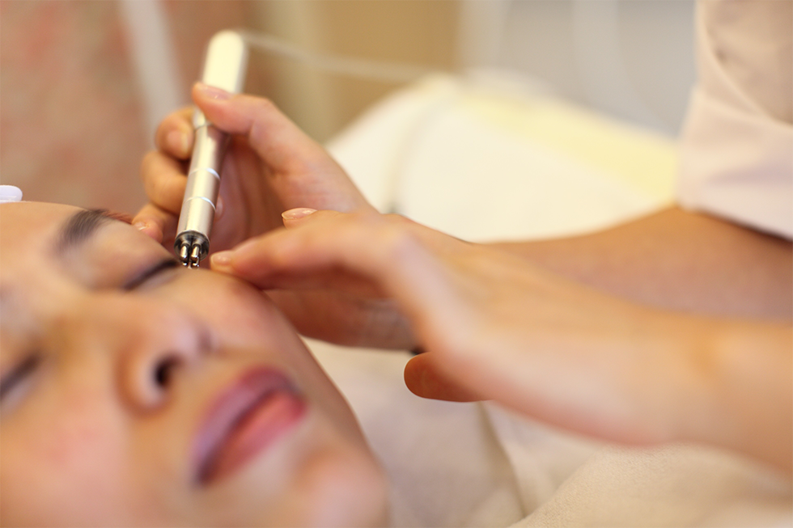

世界乳腺癌防治月著名建筑物粉红丝带亮灯集萃
2016-06-01
本会是全世界热心慈善事业的华人、社会各界人士、慈善机构、社会团体及从事社会福利工作的单位和有关部门自愿组成的世界性的专业提倡女性关爱健康、关爱乳房、乳腺癌普查工程的社会团体，是非营利性的社会组织。
促进会是为了加强女性乳腺癌防治事业的理论、经验和方法的推广；加强与各地政府职能部门间的联系与合作；加强健胸从业人员的技能与待遇的提高；促使健胸行业的规范与发展。
本会是全世界热心慈善事业的华人、社会各界人士、慈善机构、社会团体及从事社会福利工作的单位和有关部门自愿组成的世界性的专业提倡女性关爱健康、关爱乳房、乳腺癌普查工程的社会团体，是非营利性的社会组织。
促进会是为了加强女性乳腺癌防治事业的理论、经验和方法的推广；加强与各地政府职能部门间的联系与合作；加强健胸从业人员的技能与待遇的提高；促使健胸行业的规范与发展。